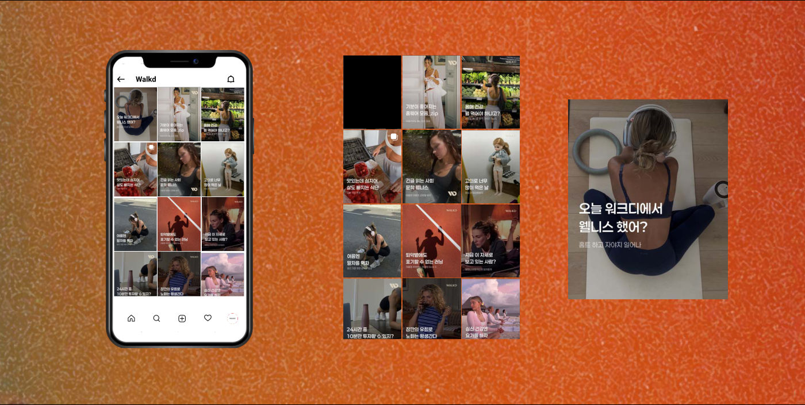

웰니스 손목 밴드 브랜드의 인스타그램을 런칭해 1개월 만에 팔로워 1,800명을 모았습니다.
핵심 성과
1.8K1개월 팔로워
브랜드
Walkd (기능성 손목 밴드)
타깃
자기 관리를 중시하는 2030 여성
수행
FEEDFACE (프리랜서)
역할
- 1브랜드 런칭신규 계정 콘셉트와 피드 톤 설계
- 2스몰 럭셔리 전략고가 요가웨어 브랜드처럼 비주얼 연출
- 3라이프스타일 콘텐츠독서, 명상 등 일상 속에 제품을 자연스럽게 배치
성과
- 1,800명1개월 만에 팔로워 달성
- 12,000원저단가 제품을 ‘취향 아이템’으로 인식 전환
문제와 해결
문제콘텐츠 해결
- 땀 흘리는 운동 도구라는 이미지지성 있는 여성의 라이프스타일 오브제로 재정의
- 저가 제품이라 ‘값싼 물건’으로 보일 위험고급스러운 브랜딩으로 가격 저항선 낮춤
- 기능을 직접 설득하는 광고브랜드가 제안하는 삶의 태도를 소비하도록
작업물
